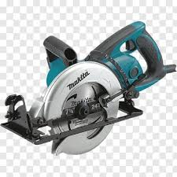
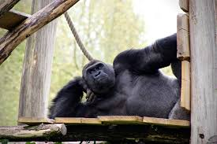

Memes de Homem
Estes memes são piadas ou coisas que apenas homens acham engraçado.
MAKITA - O meme atual que está em volta dessa maquina parte da ideia de que todos os homens sonham em ter uma makita, e o perigo dos “caras do telhado” a roubarem.
Os caras do telhado - O meme dos caras do telhado vem do medo que nós, seres humanos, sentimos de perder algo especial(Makita).
-Calvão de cria - O meme sobre o corte de cabelo “calvão de cria" vem da ideia de os homens tem coragem pra colocar o que quiser na cabeça, e logo logo a maioria deles tera esse corte naturalmente, pra que evitar o destino o certo é correr até ele.
100homens VS 1gurila - Este meme vem da ideia de que os homens acham que poderiam vencer qualquer coisa em uma luta, até mesmo o maior primata do mundo moderno se estiverem em grande quantidade.

voltar para entrada ---Volte sempre---